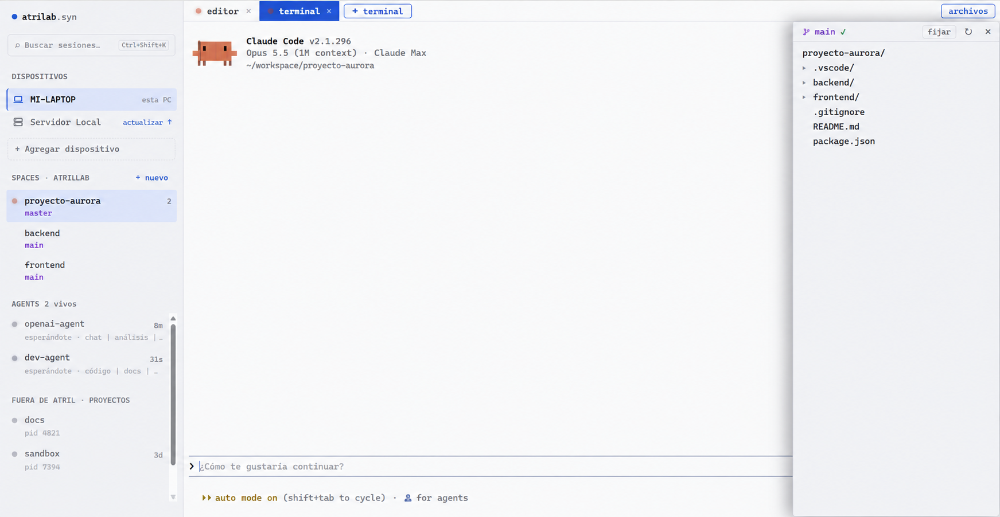

Claude Code, Codex, OpenCode y Gemini corriendo en todas tus máquinas, en una sola ventana. Cada sesión vive en el daemon de Atril hasta que termina o la terminás vos.
gratis ▪ Apache-2.0 ▪ sin cuentas
Windows 10 y 11: descomprimí el .zip y abrí Instalar Atril. Queda en el menú Inicio, sin permisos de administrador.

Cómo funciona: qué pasa al cerrar la pestaña
Lo que trae
Estados
Máquinas
Archivos
Temas
atr top
Local
Preguntas
¿Qué pasa con mi agente si cierro la pestaña?
Sigue corriendo. Cada sesión vive en el daemon de Atril hasta que termina, la terminás con Ctrl-C adentro o la cerrás a propósito. La volvés a abrir desde la ventana o con atr attach.
¿Qué agentes funcionan con Atril?
Cualquier programa de terminal: Claude Code, Codex, OpenCode, Gemini, Aider, Goose y también tu shell. Atril reconoce a los agentes y muestra si están trabajando, si te necesitan o si terminaron.
¿Puedo usarlo con mis servidores?
Sí. Agregás user@host y la contraseña una sola vez; Atril deja su propia llave SSH y el servidor aparece en la barra lateral con sus agentes.
¿Atril manda mis datos a algún lado?
No. El daemon escucha solo en 127.0.0.1, con una clave por máquina. No hay cuentas ni telemetría.